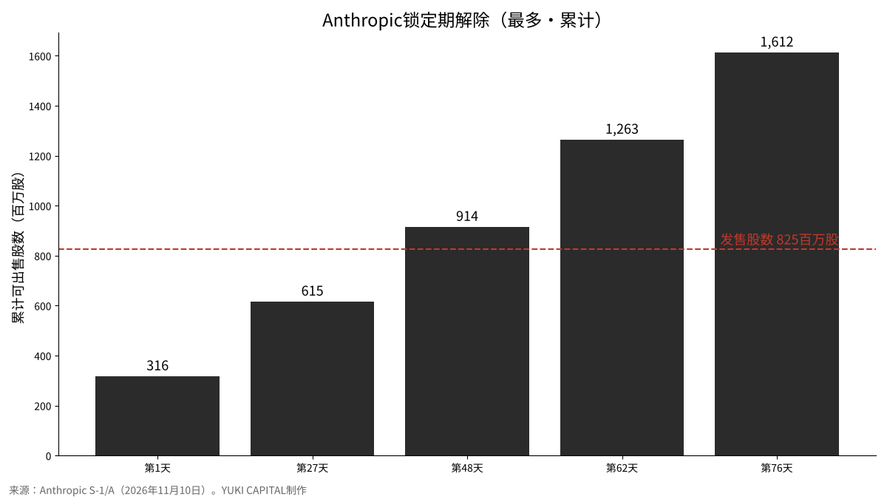
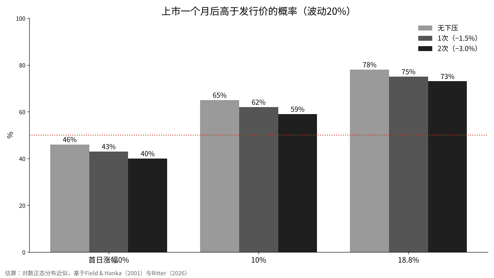

Anthropic上市76天内最多16亿股解禁――从S-1/A的锁定期表与Field和Hanka的研究，估算上市一个月后高于发行价的概率
Anthropic计划于11月19日在纳斯达克上市，发行价区间为每股70至78美元，发售8.25亿股。
上市当天，大家关注的是首日价格。但长期推动股价的，是此后流入市场的股票数量。
本文要回答的问题是：当锁定期（出售限制）分阶段解除时，上市一个月后股价高于发行价的概率大约是多少？
- 根据11月10日的S-1/A，上市首日起最多3.16亿股可以出售，到第76天累计最多16.12亿股。仅第一个月就相当于发售股数的约75%。
- 过去的研究显示，锁定期解除前后3天，股价平均下跌约1.5%。若在第一个月内设定两次下压（−3%），上市一个月后高于发行价的概率估算为：首日涨幅为零时约40%，首日涨幅为10%时约59%。
- 影响结果最大的是首日涨幅，波动大小和下压次数的影响较小。这只是基于假设的估算，并非预测。

问题与背景
锁定期是指上市前的股东和高管承诺在上市后一段时间内不出售股票的安排。美国证券交易委员会（SEC）将这一期限描述为"通常为180天"[5]。
Anthropic的安排并不是在180天时一次性解除。11月10日提交的招股书修订版（S-1/A）列出了上市首日、第27天、第48天、第62天和第76天各阶段可出售的股数[1]。大多数股东的限制为180天，联合创始人等最长为365天[1]。对于在上市当天买入的人来说，这张日程表是显示卖方何时可能增加的唯一官方资料。
规模也值得确认。8.25亿股乘以70至78美元的区间，募资额约为577.5亿至643.5亿美元。与上市同时，公司还计划向特定投资者配售约260亿美元的股票[1]。上市后总股本约130.87亿股，可以自由买卖的股票起初只占6%多一点[1]。
发行价是指上市前确定、认购投资者取得股票的价格。本文的首日价格指上市首日的收盘价。
数据与方法
本文使用5份资料：(1)Anthropic于2026年11月10日提交的S-1/A中"未来可出售股份"一表[1]；(2)Field和Hanka于2001年关于锁定期解除与股价的论文[2]；(3)Ofek和Richardson于2000年对同一主题的研究[3]；(4)Jay Ritter教授整理的美国上市统计[4]；(5)SEC面向投资者的说明[5]。
方法分三步。第一，把各阶段可出售的股数累加，并与发售股数比较。第二，把论文给出的"解除前后股价下跌的幅度"，按第一个月内的解除次数作为股价的下压。
第三，计算一个月后股价高于发行价的概率。一个月按约21个交易日计算。一个月的价格变动用对数正态分布近似：把"首日涨幅＋下压−波动的平方的一半"除以波动，再代入标准正态分布。这里的"波动"是一个月价格变动的标准差，参照刚上市的大型科技股，在15%至25%之间变动。
除下压之外，平均漂移设为零。在一个月这样短的期间内，供需和首日的势头比公司的成长或整体市场更能影响价格。
结果
将S-1/A的表累加，结果如下[1]。数字均为"最多"，并不意味着全部会被卖出。
| 上市后天数 | 该阶段可出售的股数 | 累计 | 占发售8.25亿股的比例 |
|---|---|---|---|
| 第1天 | 3.16亿股 | 3.16亿股 | 38% |
| 第27天 | 2.99亿股 | 6.15亿股 | 75% |
| 第48天 | 2.99亿股 | 9.14亿股 | 111% |
| 第62天 | 3.49亿股 | 12.63亿股 | 153% |
| 第76天 | 3.49亿股 | 16.12亿股 | 195% |

上市后一个月内重叠的阶段有两个：首日和第27天。此外，同时配售的约3.5135亿股不受锁定期约束[1]。上市刚开始，可能流动的股票就远多于只看发售股数时的印象。
按占总股本的比例看，可在市场出售的股票从上市时的约6.3%，在首日解除后增至约8.7%，到第76天约为18.6%。这些数字看起来不大，但与每天的成交量相比，足以改变供需。
Field和Hanka研究了1988年至1997年的1,948起锁定期解除，发现解除前后3天股价平均下跌1.5%，此后成交量持续高出40%[2]。Ofek和Richardson在1996年至1998年的1,056个案例中发现，解除前5天下跌2.03%[3]。据此，本文设定每次解除下压1.5%。
到第48天，可出售股数的累计超过发售股数。上市不到两个月，比最初进入市场更多的股票就可能加入卖方。
敏感性分析
本文变动三个假设：首日涨幅（0%、10%、18.8%）、一个月的波动（15%、20%、25%）和下压次数（0次、1次、2次）。18.8%是Ritter教授整理的1980年以来美国上市的首日平均涨幅[4]。
| 下压 | 波动 | 首日涨幅0% | 首日涨幅10% | 首日涨幅18.8% |
|---|---|---|---|---|
| 无 | 20% | 46% | 65% | 78% |
| 1.5%（1次） | 20% | 43% | 62% | 75% |
| 3.0%（2次） | 15% | 39% | 64% | 81% |
| 3.0%（2次） | 20% | 40% | 59% | 73% |
| 3.0%（2次） | 25% | 40% | 55% | 67% |

从表中可以读出两点。首日涨幅为零时，无论哪种假设，概率都低于五成。即使设定两次下压，概率的差距也只有几个百分点，远小于首日涨幅造成的差距（在相同波动下超过30个百分点）。
讨论
也有相反的看法。Anthropic的股东多为打算长期持有的大型机构，即使解禁也可能不卖。此外，解除日程事先公开，在有效市场中，这部分应已反映在价格里[3]。
另一方面，Field和Hanka也显示，有风险投资参与的公司在解除时跌幅更大[2]。Anthropic筹集过大量大规模资金，这一点可能加强下压。
还有一种解读是，把解除细分为多个阶段，本身就是缓和下压的设计。一次放出16亿股，与每两三周放出约3亿股，买方能消化的量不同。从这一点看，论文平均的1.5%对Anthropic来说可能偏大。
据报道，同一年上市的SpaceX也把锁定期分成了九个阶段。随着大型上市接连出现，分阶段解除或许正在成为常态。
局限也要写明。论文的样本是1988年至1998年的上市，规模和时代都与此次不同。用对数正态分布近似一个月的价格变动，会低估大涨大跌连续出现的局面。检验标准是12月19日前后（上市约一个月）的收盘价是否高于发行价。
结论
从锁定期表来看，上市76天内最多16.12亿股、约为发售股数两倍的股票将可出售。仅第一个月就相当于发售股数的约75%。
在估算中，一个月后高于发行价的概率很大程度上取决于首日涨幅：涨幅为零时约四成，涨幅一两成时为六至八成。解除带来的下压会使概率下降几个百分点，但不是主角。
从更长的时间看，第180天和第365天的解除量更大。比起一个月后的概率，到那一天买方培育了多少，更可能决定股价的走向。
我的看法
我在日本，打算在上市后买入约1,000万日元（约6.3万美元）的Anthropic股票，并持有10年、20年。上市当天我不打电话下单，先观察。
对于一个月后，我认为股价会上涨。即便如此，明年某个时候应该会出现跌破发行价的局面。如果在锁定期持续解除期间股价下跌，我会在那时加仓。我把这张表看作一张告诉我那一天何时可能到来的地图。
来源
- Anthropic, PBC "Form S-1/A (Amendment No. 2), Shares Eligible for Future Sale" SEC EDGAR，2026年11月10日 https://www.sec.gov/cgi-bin/browse-edgar?company=anthropic&type=S-1
- Laura Casares Field, Gordon Hanka "The Expiration of IPO Share Lockups" Journal of Finance 56(2)，2001年 https://ideas.repec.org/a/bla/jfinan/v56y2001i2p471-500.html
- Eli Ofek, Matthew Richardson "The IPO Lock-Up Period: Implications for Market Efficiency and Downward Sloping Demand Curves" NYU Stern，2000年（据Cochrane的整理） https://www.johnhcochrane.com/s/internet-and-demand-curves.pdf
- Jay R. Ritter "Initial Public Offerings: Sales Statistics Through 2025" 佛罗里达大学，2026年1月1日 https://site.warrington.ufl.edu/ritter/files/IPOs-Sales.pdf
- 美国证券交易委员会 "Lock-up agreement"（Investor.gov 术语表） https://www.investor.gov/introduction-investing/investing-basics/glossary/lock-up-agreement
- FourWeekMBA "Up to 1.6B Anthropic Shares Unlock Within 76 Days of IPO"（S-1/A表格整理），2026年11月 https://fourweekmba.com/ai-up-to-1-6b-anthropic-shares-unlock-within-76-days-of-ipo/
- Motley Fool "Anthropic set its IPO price range at $70 to $78" 2026年11月13日 https://www.fool.com/investing/2026/11/13/anthropic-set-its-ipo-price-range-at-70-to-78-valuing-it-at-up-to-1405-trillion/
- Webull "What SpaceX's Lockup Expiry Could Mean for Anthropic's IPO Strategy" 2026年11月 https://www.webull.com/news/15581005814711296
照片：Maxim Hopman（Unsplash）。图表由YUKI CAPITAL制作
每天的数字和判断，我都记录在X上。